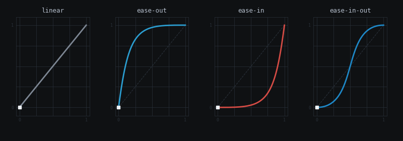
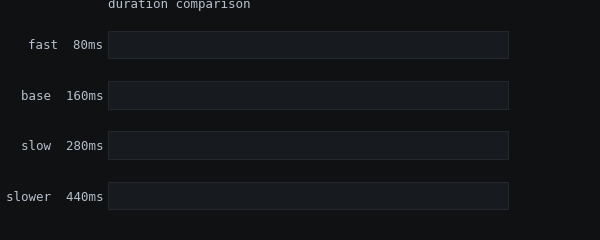

Motion Tokens
Standardized durations and easing curves compiled from colors.json to CSS, SwiftUI, C#/Unity, Python, and JS. All transitions compose from these primitives.
Curve Visualizations
Threshold / Reference
Generated from colors.json Motion tokens. Easing curves plotted as normalized 0-1 progress; duration bars show relative timing.

motion_easing_curves.gif — cubic-bezier curves with animated progress

motion_durations.gif — relative duration comparison
Token Reference
Threshold / Tokens
Duration and easing tokens live in :root alongside Strata color tokens. Composed shorthands preserve backward compatibility with var(--threshold-fast).
Durations
Token
Value
Use
--threshold-duration-fast
80ms
Toggle, hover, color
--threshold-duration-base
160ms
Menu, tooltip, state
--threshold-duration-slow
280ms
Accordion, drawer
--threshold-duration-slower
440ms
Page transitions
Easing Curves
Token
Value
Use
--threshold-ease-linear
linear
Data updates, progress
--threshold-ease-out
cubic-bezier(0.16, 1, 0.3, 1)
Elements entering
--threshold-ease-in
cubic-bezier(0.7, 0, 0.84, 0)
Elements leaving
--threshold-ease-in-out
cubic-bezier(0.65, 0, 0.35, 1)
State toggles
Composed Shorthands
Token
Expands To
Use
--threshold-fast
var(--threshold-duration-fast) var(--threshold-ease-linear)
Micro-interactions
--threshold-base
var(--threshold-duration-base) var(--threshold-ease-linear)
State changes
--threshold-slow
var(--threshold-duration-slow) var(--threshold-ease-linear)
Layout shifts
Duration Comparison
Threshold / Duration
Click "Play" to see all four durations fire simultaneously. Each bar fills at its actual speed.
Play
Reset
transition: width var(--threshold-duration-base) linear;
Easing Curves
Threshold / Easing
Each canvas draws a 0-1 normalized curve and animates a dot along it. Click "Animate" to trigger.
Animate
ease-out
cubic-bezier(0.16, 1, 0.3, 1)
ease-in
cubic-bezier(0.7, 0, 0.84, 0)
ease-in-out
cubic-bezier(0.65, 0, 0.35, 1)
transition: transform var(--threshold-duration-slow) var(--threshold-ease-out);
Live Transitions
Threshold / Interactive
Real CSS transitions using the motion tokens. Each demo composes a duration token with an easing token for its specific use case.
Entrance / Exit / Toggle / Scale
Trigger All
Reset
toggle
base + ease-in-out
Hover — composed shorthands
--threshold-fast
80ms linear — hover me
--threshold-base
160ms linear — hover me
--threshold-slow
280ms linear — hover me
/* Entrance — decelerate into position */
transition: opacity var(--threshold-duration-slow) var(--threshold-ease-out),
transform var(--threshold-duration-slow) var(--threshold-ease-out);
/* Exit — accelerate out */
transition: opacity var(--threshold-duration-base) var(--threshold-ease-in),
transform var(--threshold-duration-base) var(--threshold-ease-in);
/* Toggle — symmetric motion */
transition: transform var(--threshold-duration-base) var(--threshold-ease-in-out);
/* Hover — composed shorthand (backward compat) */
transition: background var(--threshold-fast), border-color var(--threshold-fast);
Staggered Entrance
Threshold / Pattern
Each bar delays by 50ms * index using CSS custom properties. Cap total stagger time — 10 items at 50ms = 500ms total. Uses --threshold-duration-slow + --threshold-ease-out.
Play
Reset
.bar {
transition: opacity var(--threshold-duration-slow) var(--threshold-ease-out),
transform var(--threshold-duration-slow) var(--threshold-ease-out);
transition-delay: calc(var(--i, 0) * 50ms);
}
Reduced Motion
Threshold / Accessibility
When prefers-reduced-motion: reduce is active, all --threshold-duration-* tokens collapse to 0.01ms. This cascades through composed shorthands automatically. No per-component overrides needed.
@media (prefers-reduced-motion: reduce) {
:root, [data-strata="light"] {
--threshold-duration-fast: 0.01ms;
--threshold-duration-base: 0.01ms;
--threshold-duration-slow: 0.01ms;
--threshold-duration-slower: 0.01ms;
}
}
i
Test it
Enable reduced motion in your OS settings, then replay any demo above. All animations complete instantly while preserving final state.